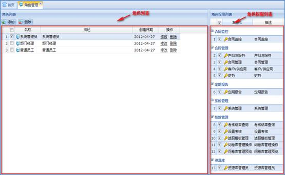
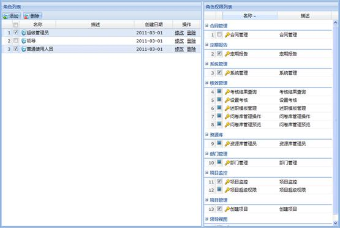

角色管理主要作用是对系统的角色及其权限进行管理。功能包括新建角色、修改角色、删除角色、角色授权和移除权限。
在系统菜单里选择角色管理，工作区会显示角色管理模块信息。工作区左边显示的是角色列表区，右边显示角色权限列表区，上面显示工具栏，如下图所示：

图 角色管理
1、添加角色
通过角色列表工具栏的“添加”按钮或右键菜单的“添加角色”添加。
注意：
添加角色时可以通过添加界面的“权限”标签页界面为角色授权。
2、修改角色
在角色列表中选择一个要修改的角色，通过右键菜单的“修改角色”或操作区的“修改”修改。
注意：
修改角色时可以通过修改界面的“权限”标签页界面修改角色的权限。
3、删除角色
（1）删除一个角色：在角色列表中选择一个要删除的角色，通过工具栏的“删除”按钮或右键菜单的“删除角色”或操作区的“删除”删除。
（2）批量删除角色：在角色列表中选择多个要删除的角色，通过工具栏的“删除”按钮删除。
1、编辑权限
（1）给一个人授权：在角色列表中选择一个要授权的角色，在角色权限列表中勾选相应的权限。
（2）给多个人授权：在角色列表中选择多个要授予相同权限的角色，在角色权限列表中勾选相应的权限。
2、查看权限
（1）查看一个角色的权限：在角色列表中选择一个角色，在角色权限列表中显示相应的权限。
（2）多个角色权限的对比：在角色列表中选择多个角色，在角色权限列表中可以查看选中角色的相同以及不同权限，如图所示。其中 表示选中角色有不同的权限，
表示选中角色有不同的权限， 表示选中角色有相同的权限。
表示选中角色有相同的权限。

图 角色权限